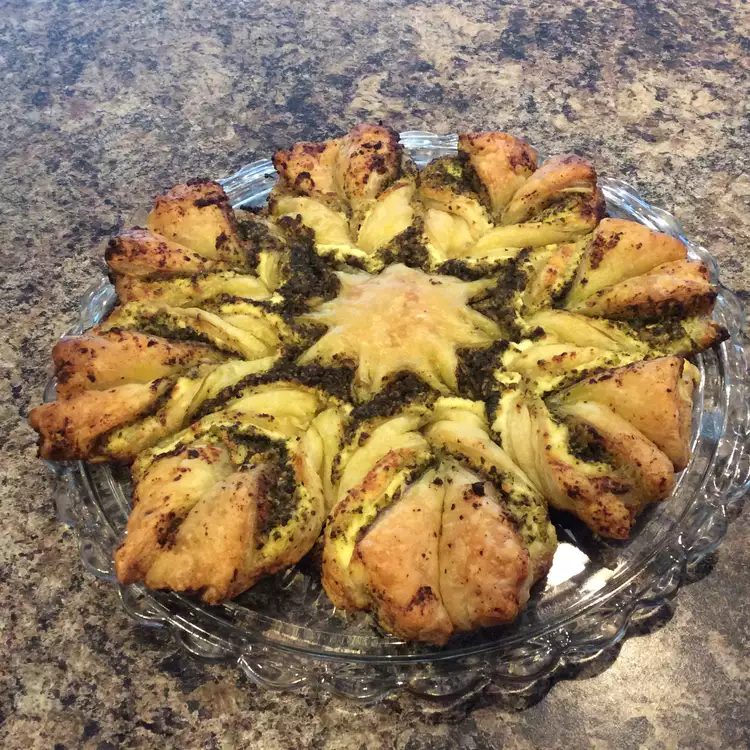

Pesto Puff Pastry Pinwheels

Description
A simple and quick puff pastry and pesto pinwheel recipe with pine nuts and Parmesan cheese. These are perfect for just piling on a platter and sharing with friends!
Ingredients
- 1/2 (17.5 ounce) package frozen puff pastry, thawed
- 1/2 cup pesto
- 1/2 cup pine nuts
- 1/4 cup grated Parmesan cheese
- 4 tablespoons milk
Steps
- Preheat the oven to 350 degrees F (175 degrees C). Line a baking sheet with parchment paper.
- Dust a flat work surface lightly with flour. Unroll puff pastry sheet and roll out into a rectangle. Spread pesto evenly over puff pastry, smoothing it out with a spoon. Scatter pine nuts evenly over the pesto and top with grated Parmesan cheese.
- Roll puff pastry up tightly like a jelly roll from the longer side. Brush with milk to glaze.
- Slice puff pastry roll into 12 to 15 pinwheels about 1/2-inch-thick. Lay pinwheels on the prepared baking sheet, leaving some space between each one
- Bake in the preheated oven until pastry is lightly browned, 15 to 20 minutes. Let sit for 1 minute on baking sheet before removing.